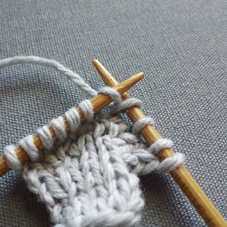

Increases
All increases insert one or more stitches into the knitting. The new stitch will push the stitches around it away from each other, shaping the knitting in the process. Increases serve a practical purpose, but also can be used with decreases to create lace and other decorative effects while keeping the total number of stitches the same.
Make One Right / Make One Left
This increase method makes a stitch between two pre-existing stitches by picking up the ‘bar’ of yarn between the most recently worked stitch on the right needle and the first stitch on the left needle. It will cause some distortion in the stitches on either side because it is pulling some of the yarn out of those stitches.
To make one left
- Insert the left needle from front to back under the strand of yarn between the stitches.
- Knit this through the back loop (insert the right needle from right to left).
To make one right
- Insert the left needle from back to front under the strand of yarn between the stitches.
- Knit this normally.
Knit Front and Back
This increase knits the increase into an existing stitch. It creates a small purl bump on the left of the knit stitch, so it is noticeable.
- 
- Knit the stitch, but leave it on the left needle.
- While stitch you just worked is still on the left needle, knit into the back loop of the stitch you just worked.
- Now drop the stitch off the left needle.
Invisible Increase
This method lifts a previously worked stitch onto the needle and is then worked to create a new stitch.
To create a left leaning invisible increase
- Slip stitch purlwise with yarn in the back.
- Insert the tip of the left needle from back to front into the stitch below the stitch you just slipped onto the right needle.
- Lift this stitch up onto the left needle and knit it through the back loop
To create a right leaning invisible increase
- Insert the right needle from back to front into the stitch below the first stitch on the left needle.
- Lift this stitch onto the left needle.
- Knit this stitch
- Slip the original first stitch on the left needle purlwise with yarn in back
Yarn Over
Yarn overs are very easy to do, and thus are often done accidently. If there is a mystery hole in your knitting, it is probably because you worked a yarn over and didn’t realize it. Yarn overs create a new stitch between two other stitches. Yarn overs create a hole and are very often used in lace knitting.
- Wrap the working yarn in front of and over the top of the right needle.
- Keep working the row/round as usual.
- On the next row/round work the yarn over wrap like normal stitch.
Eyelet Increase
An eyelet increase makes a hole like a yarn over. The hole is smaller and is worked like a M1.
- Insert the left needle from front to back under the strand of yarn between the stitches.
- Knit this normally.